Home · Lezioni · Lezione 5 · 29/09
Laboratorio Matlab: conversione A/D e D/A
Lo script AD_conversion.m commentato: spettro, campionamento, interpolazione, quantizzazione, SNR. Non è materia d'esame.
Indice della lezione
Il corso, slide per slide
Fonte: lo script AD_conversion.m e le tre figure della lezione di laboratorio (raw/scripts/09_28_2006/). Non è materia d'esame: serve a vedere sui numeri ciò che la Lezione 3 dice a parole. Le figure «replica» sono ricavate rieseguendo lo script in Python.
Lo script simula la catena campionamento → interpolazione → quantizzazione → SNR su due segnali (esempio 1: il trapezio; esempio 2: tre sinusoidi). Il computer lavora su vettori, quindi il «tempo continuo» è una griglia molto fitta.
0. Il «tempo continuo» e lo spettro
accuracy = 1e4; t_i = -30; t_f = 30;
D = t_f - t_i; % 60 s
dt = D/accuracy; % 6 ms
t = t_i:dt:t_f-dt; % N = 10^4 istanti
| Grandezza | Valore |
|---|---|
| finestra D | 60 s (-30 \to 30) |
| passo dt | 60/10^4 = 6 ms |
| punti N | 10^4 (l'ultimo estremo è escluso) |
| banda visibile | \pm 1/(2\,dt) = \pm 83.3 Hz |
| risoluzione in frequenza | 1/(N\,dt) = 1/60 Hz |
- Regola del codice: ogni istante «speciale» (spigoli, T_s) viene arrotondato a un multiplo di dt con
round(x/dt)*dt, perché nel vettore esistono solo i tempi della griglia. - Esempio 1 (trapezio): 0 fino a -2 s, rampa fino a 1 in -1 s, costante a 1 fino a +1 s, rampa fino a 0 in +2 s. Banda dichiarata
W = 1Hz. - Esempio 2: s(t) = 5\sin(2\pi\,4t + \tfrac{\pi}{5}) + 3\sin(2\pi\,\tfrac43 t + \tfrac{\pi}{8}) + 2\sin(2\pi\,0.4t - \tfrac{\pi}{3}), frequenze 4, 1.33, 0.4 Hz,
W = 4Hz (banda davvero limitata).
Lo spettro: perché dt*fft
S_dft = fftshift(fft(s)); % DFT con la frequenza zero al centro
S = dt*S_dft; % approssima l'integrale di Fourier
f = linspace(-0.5,0.5,N)/dt;
La trasformata è un integrale; sulla griglia diventa una somma di Riemann, e il passo dt è l'ampiezza di ogni rettangolino:
La FFT è la somma senza dt: moltiplicare per dt dà le unità giuste (V·s = V/Hz) e rende il risultato indipendente da quanto è fitta la griglia. Il fattore di fase e^{-j2\pi f t_i} (la griglia parte da -30, non da 0) non cambia il modulo.
Spettro esatto del trapezio (derivazione del lab): è la convoluzione di un rettangolo largo 3 e uno largo 1, s = \Pi(t/3)\ast\Pi(t), quindi
La FFT dà S(0) = 2.986. Solo lo 0.05% dell'energia sta oltre 1 Hz (0.85% oltre 0.5 Hz): per questo W = 1 è una banda ragionevole, anche se il trapezio non è a banda limitata.
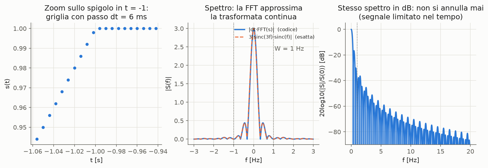
Replica: a sinistra lo spigolo in t = -1 visto come fila di punti ogni 6 ms; al centro \lvert dt\cdot\text{FFT}\rvert (blu) sovrapposta alla trasformata esatta (arancio tratteggiato); a destra lo spettro in dB, con lobi che non arrivano mai a zero.
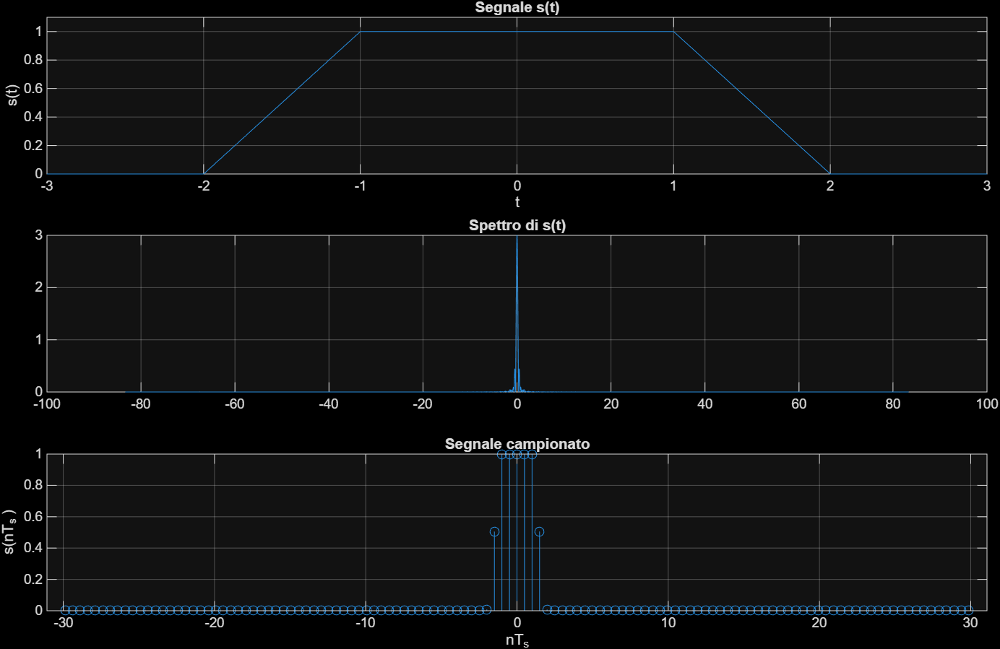
Figura 1 del laboratorio (esempio 1). In alto il trapezio su [-3, 3] s; al centro lo spettro sull'asse \pm 83 Hz, concentrato attorno a 0 con picco 3; in basso i 121 campioni su [-30, 30] s, quasi tutti nulli.
Appunti sparsi — DFT e DTFT
Per una sequenza con x(m)\neq0 solo per m=0,\dots,N-1, la DFT X_k=\sum_{m=0}^{N-1}x(m)e^{-j2\pi mk/N} coincide con la trasformata a tempo discreto X(\nu)=\sum_mx(m)e^{-j2\pi m\nu} calcolata in \nu=k/N: la DFT è il campionamento della trasformata di Fourier a tempo discreto. Gli appunti segnano come «da capire» che, per effetto dell'elaborazione, la componente continua viene spezzata e spostata: è l'effetto di fft e fftshift, spiegato in lab setup e spettro.
1. Campionamento
fs = 2*W; Ts = 1/fs;
Ts = round(Ts/dt)*dt; % multiplo di dt
high = (abs((t/Ts)-round(t/Ts)) < eps); % 1 dove t è multiplo di Ts
s_samp = s.*high; % azzera tutto il resto
is = find(high); % indici dei campioni
stem(t(is), s_samp(is));
highvale 1 negli istanti nT_s (con tolleranzaepsper gli errori di virgola mobile);s.*highè il prodotto punto per punto: lascia s ai campioni e mette 0 altrove.find(high)restituisce gli indici degli 1;stemdisegna aste (campioni) invece di una curva.s_sampè la versione simulata di x_\delta(t) = \sum_n x(nT_s)\,\delta(t - nT_s): ha ancora 10^4 punti, ma solo i campioni possono essere non nulli. Il filtro di interpolazione ha picco 1, quindi non serve correggere la scala della \delta.
Esempio 1: f_s = 2W = 2 Hz → T_s = 0.5 s; 0.5/0.006 = 83.3 \to 83, quindi T_s = 0.498 s e f_{samp} = 2.008 Hz. Nella finestra cadono n = -60, \dots, 60: 121 campioni, di cui 9 non nulli:
| nT_s [s] | \pm 1.992 | \pm 1.494 | \pm 0.996, \pm 0.498, 0 |
|---|---|---|---|
| s(nT_s) | 0.008 | 0.506 | 1 |
Spettro: campionare replica lo spettro ogni f_{samp}, X_\delta(f) = \frac{1}{T_s}\sum_k S\big(f - \frac{k}{T_s}\big). Il trapezio non è a banda limitata, quindi le code delle repliche entrano in \lvert f\rvert < f_s/2 (aliasing), ma qui è trascurabile (0.05% dell'energia oltre 1 Hz). Il commento del codice («come se avessimo applicato un filtro anti-aliasing») significa questo: nessun filtro è applicato, il segnale ha solo già quasi tutta l'energia sotto 1 Hz.
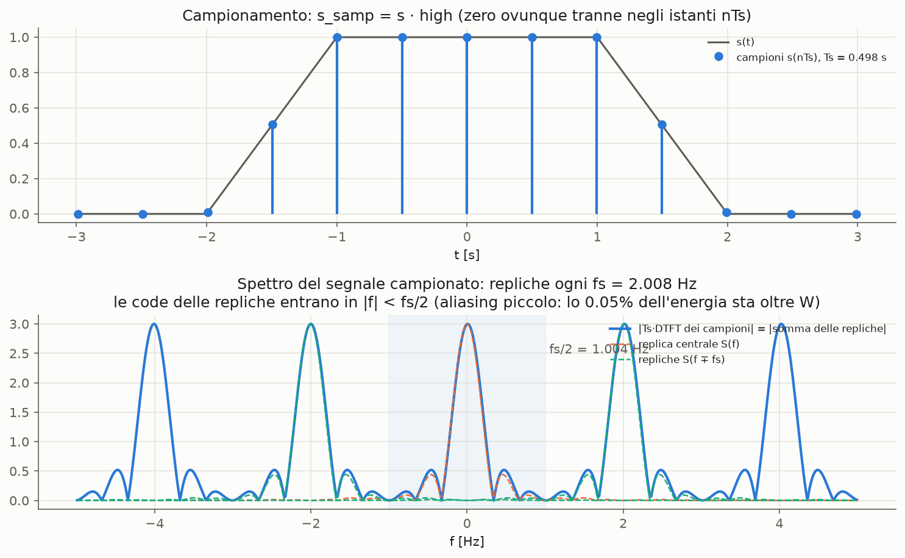
Replica. In alto il trapezio e i campioni ogni 0.498 s; in basso lo spettro dei campioni (blu) come somma delle repliche S(f), S(f \mp f_s) (tratteggiate). Nella fascia \lvert f\rvert < 1.004 Hz la replica centrale è quasi pulita.
Esempio 2 (l'arrotondamento rompe il teorema): f_s = 2W = 8 Hz → T_s = 0.125 s; 0.125/0.006 = 20.83 \to 21, quindi T_s = 0.126 s e f_{samp} = 7.937 Hz < 2W = 8 Hz. La componente a 4 Hz supera f_{samp}/2 = 3.968 Hz e si ripiega in f_{samp} - 4 = 3.937 Hz: la ricostruzione con la sinc ha SNR 2 dB; con f_s = 16.7 Hz sale a 37.5 dB. Anche f_s = 2W esatto è il caso limite della: una sinusoide a f_s/2 viene campionata sempre nella stessa fase, e l'ampiezza non si ricostruisce.
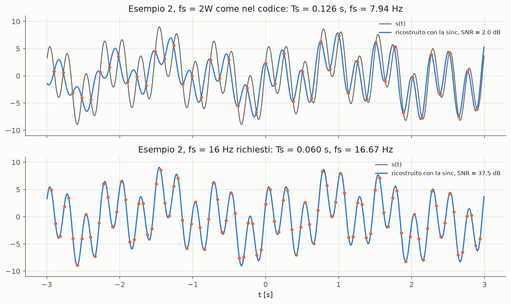
Replica. In alto f_s = 7.94 Hz: i campioni sono giusti ma la curva ricostruita non è il segnale (i campioni sono compatibili anche con una sinusoide più lenta); in basso f_s = 16.67 Hz: la ricostruzione coincide.
2. Interpolazione
C = 2; % 1 rettangolo, 2 triangolo, 3 sinc
switch C
case 1 th = 0:dt:Ts; h = ones(size(th)); % rect((t-Ts/2)/Ts)
case 2 th = -Ts:dt:Ts; h = 1-abs(th/Ts); % lambda(t/Ts)
case 3 th = -25*Ts:dt:25*Ts; h = sinc(th/Ts); % sinc(t/Ts)
end
L = length(h);
s_r = conv(s_samp,h); % interpolazione
s_r_trunc = s_r(floor((L-1)/2)+1 : floor((L-1)/2)+N); % taglio a N punti
t_conv = (t(1)+th(1)) + (0:length(s_r)-1)*dt; % asse dell'uscita completa
- La convoluzione è la formula di interpolazione: x_r(t) = \sum_n x(nT_s)\,h(t - nT_s). Ogni campione «accende» una copia di h centrata sul suo istante e pesata dal suo valore; le copie si sommano. Con triangoli la somma è la spezzata che unisce i campioni; con la sinc le copie oscillano e si compensano.
- Le durate si sommano.
convdi vettori con N e L punti dà N + L - 1 punti: l'uscita esiste da quando i due segnali si toccano a quando si lasciano. Se x \ne 0 solo su [a_1, b_1] e h solo su [a_2, b_2], y \ne 0 solo su [a_1 + a_2,\, b_1 + b_2].
| Filtro | th |
L | Punti di conv |
Asse dell'uscita [s] |
|---|---|---|---|---|
| triangolo (C = 2) | [-T_s, T_s] | 2\cdot 83 + 1 = 167 | 10^4 + 166 = 10166 | [-30.498,\ 30.492] |
| sinc, 25 lobi (C = 3) | [-25T_s, 25T_s] | 4151 | 14150 | [-42.45,\ 42.44] |
| rettangolo (C = 1) | [0, T_s] | 84 | 10083 | [-30,\ 30.492] |
- Perché si taglia: per confrontare s_r con s (e calcolare l'errore) i due vettori devono avere la stessa lunghezza e gli stessi istanti; i punti in più sono le code dei filtri vicino ai bordi.
- Perché proprio da (L-1)/2 + 1: il punto k dell'uscita sta a t(1) + th(1) + (k-1)\,dt; lo voglio a t(1), quindi k - 1 = -th(1)/dt = (L-1)/2 (filtro simmetrico). Si scartano (L-1)/2 punti per lato: 83 per il triangolo, 2075 per la sinc (12.45 s). Tagliando i primi N punti il ricostruito risulterebbe ritardato di 0.498 s (triangolo) o 12.45 s (sinc).
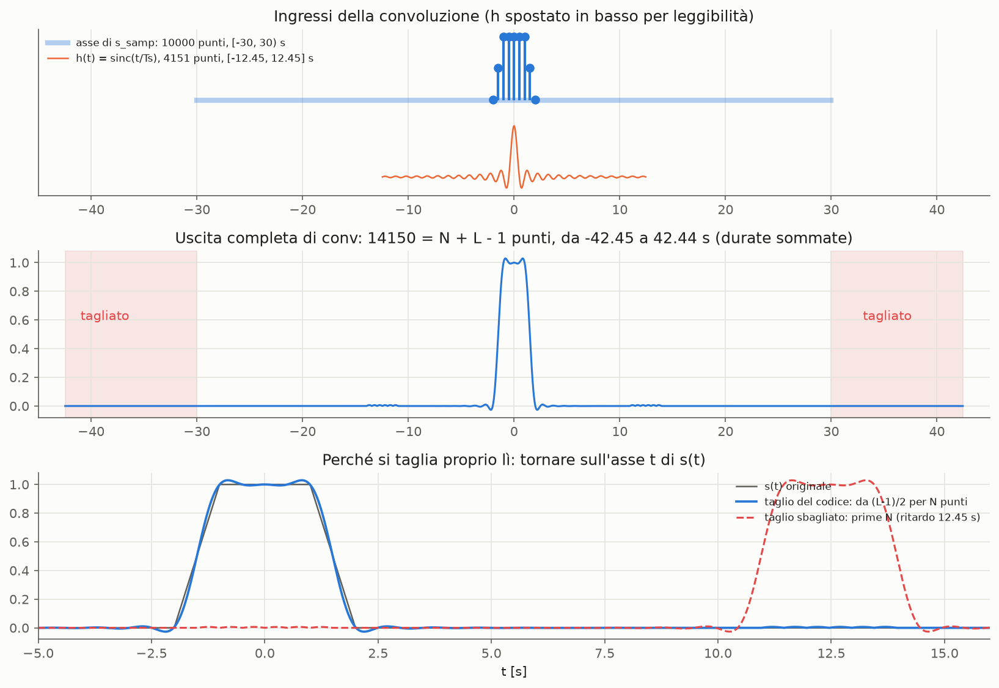
Replica (esempio 1, sinc). In alto gli ingressi di conv (10⁴ punti e 4151 punti); al centro l'uscita completa (14150 punti, fasce rosse = parti tagliate); in basso il taglio del codice (blu) contro il taglio sbagliato (rosso, spostato di 12.45 s).
I tre filtri a confronto (esempio 1 senza quantizzazione, SNR come in §4):
| Filtro | SNR | Comportamento |
|---|---|---|
| rettangolo (C = 1) | 15.8 dB | gradini con picchi |
| triangolo (C = 2) | 50.2 dB | la spezzata coincide con il trapezio (suoi spigoli \pm1, \pm2 cadono quasi su campioni: coincidenza favorevole) |
| sinc (C = 3) | 26.7 dB | curva morbida con piccole oscillazioni, massimo 1.029 in t = -0.82 s |
La sinc (serie di Shannon) ricostruisce l'unico segnale a banda limitata \lvert f\rvert < f_s/2 che passa per i campioni: il trapezio non lo è, quindi viene «smussato». Il rettangolo del codice ha due particolarità: th = 0:dt:Ts contiene sia 0 sia T_s (84 punti per 83 passi: due copie adiacenti condividono un punto, da cui i picchi a 2 e a 1.5) ed è causale, quindi con il taglio da (L-1)/2 i gradini risultano centrati sui campioni (interpolazione «al campione più vicino»), non ZOH.
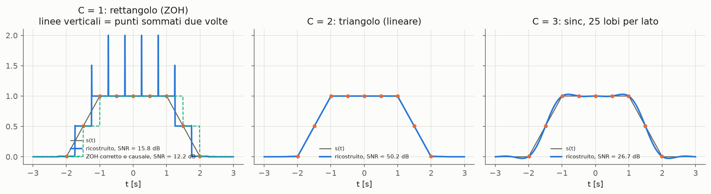
Replica: i tre interpolatori sull'esempio 1 senza quantizzazione (in verde tratteggiato lo ZOH causale vero, SNR 12.2 dB).
Quanto deve essere largo il filtro
Rettangolo largo T_s; triangolo con base 2T_s (da -T_s a +T_s). Sono le larghezze per cui valgono due condizioni:
- Passare per i campioni: h(0) = 1 e h(kT_s) = 0 per k \ne 0 (il triangolo si annulla in \pm T_s; con base 3T_s varrebbe ancora 1/3 e sporcherebbe i vicini; la sinc ha gli zeri in kT_s).
- Niente buchi né sovrapposizioni: con tutti i campioni a 1, il ricostruito deve valere 1 ovunque, cioè \sum_n h(t - nT_s) = 1. Rettangoli larghi T_s pavimentano l'asse; più stretti lasciano buchi, più larghi si sovrappongono. Tra due campioni i due triangoli valgono 1 - \tau/T_s e \tau/T_s, e sommano a 1.
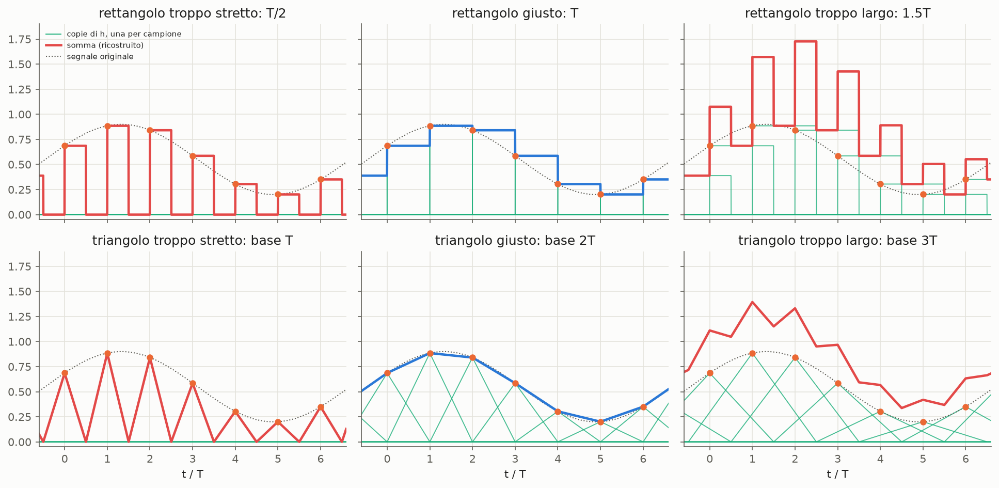
Replica: lo stesso segnale lento campionato ogni T e ricostruito con sei larghezze (rettangolo T/2, T, 1.5T; triangolo base T, 2T, 3T).
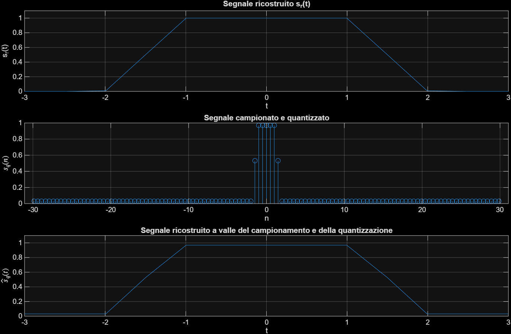
Figura 2 del laboratorio, C = 2 (triangolo): in alto il ricostruito s_r(t), identico al trapezio; al centro e in basso la parte quantizzata (§3).
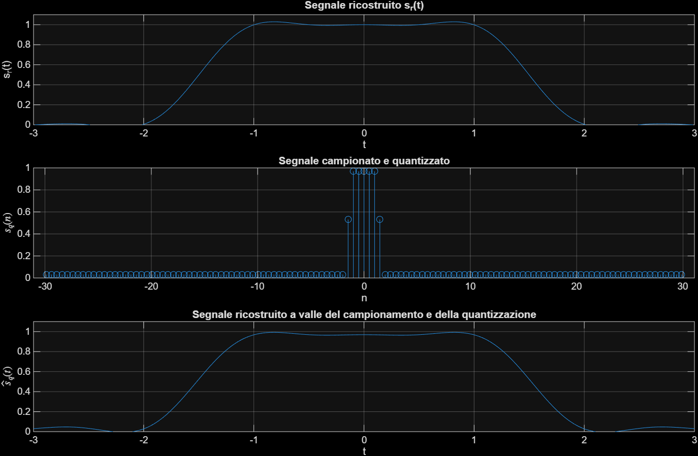
Figura 2 del laboratorio, C = 3 (sinc): fianchi arrotondati, due gobbe sopra 1 attorno a \pm 0.8 s e piccole oscillazioni fuori da [-2, 2].
3. Quantizzazione
bits = 4;
s_min = min(s_samp); s_max = max(s_samp);
range = s_max - s_min;
Nq = pow2(bits); % 2^4 = 16 livelli
Delta = range/Nq; % larghezza di una cella
cbook = s_min+Delta/2:Delta:s_max; % livelli al centro delle celle
for k=1:length(is)
[~,index(k)] = min(abs(cbook-s_samp(is(k)))); % livello più vicino
end
s_q(is) = cbook(index);
- Dinamica [s_{min}, s_{max}] dei campioni; 2. divisa in N_q = 2^b celle uguali di larghezza \Delta; 3. i livelli (codebook) sono i centri delle celle; 4. ogni campione va al livello più vicino; 5. i campioni quantizzati passano nello stesso interpolatore, con lo stesso taglio.
Numeri (esempio 1, 4 bit): s_{min} = 0, s_{max} = 1, N_q = 16, \Delta = 1/16 = 0.0625, codebook 0.03125, 0.09375, \dots, 0.96875.
| Campione | Livello più vicino | Errore e = s_q - s |
|---|---|---|
| 0 (112 campioni su 121) | 0.03125 | +0.03125 = +\Delta/2 |
| 0.008 | 0.03125 | +0.023 |
| 0.506 | 0.53125 | +0.025 |
| 1 (5 campioni) | 0.96875 | -0.03125 = -\Delta/2 |
È il quantizzatore uniforme della lezione 3: \lvert e\rvert \le \Delta/2. Con i livelli al centro delle celle e l'estremo della dinamica in 0, lo zero non è rappresentabile (il livello più basso è \Delta/2): fuori dal trapezio il ricostruito ha un «pavimento» a 0.031 e il plateau si abbassa a 0.969. Per quei campioni l'errore vale sempre \Delta/2, non è uniforme in (-\Delta/2, \Delta/2) come nel modello. (Dettaglio: s_min/s_max sono presi su tutto s_samp, zeri compresi; per il trapezio non cambia nulla.)
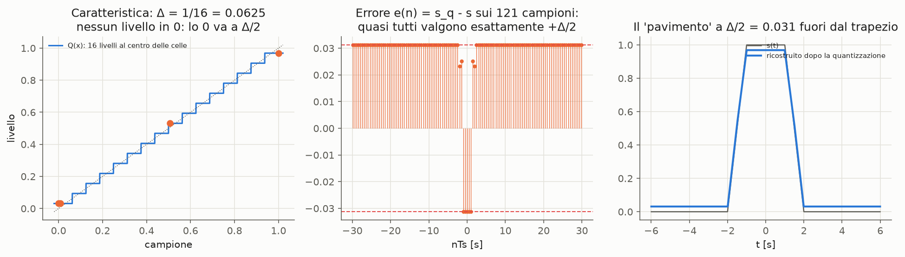
Replica (4 bit). A sinistra la caratteristica a 16 livelli con i valori dei campioni (lo 0 finisce su \Delta/2); al centro l'errore sui 121 campioni, sempre dentro \pm\Delta/2; a destra il ricostruito dopo la quantizzazione, con pavimento a 0.031 e plateau a 0.969.
4. SNR
P_s = mean(s.^2); % potenza del segnale originale
E_q = mean((s-sq_r_trunc).^2); % potenza dell'errore
SNR_q = 10*log10(P_s/E_q) % in dB
È la definizione della lezione 3, \text{SNR} = \langle x^2\rangle/\langle e^2\rangle, ma l'errore è segnale originale − ricostruito dopo quantizzazione e interpolazione: misura l'intera catena A/D + D/A, non la sola quantizzazione.
Valore stampato (esempio 1, triangolo, 4 bit): 16.7 dB. P_s \approx E/D = (8/3)/60 = 0.0444; E_q \approx 9.6\cdot10^{-4} (il 95% viene dai 56 s con segnale nullo e ricostruito a 0.031); \text{SNR} = 10\log_{10}(0.0444/9.6\cdot10^{-4}) \approx 16.7 dB.
Il numero mescola tre cose: la quantizzazione; l'interpolazione (senza quantizzare: 50.2 dB triangolo, 26.7 dB sinc, 15.8 dB rettangolo, e sono tetti per qualunque numero di bit); la finestra (calcolato su \lvert t\rvert < 2.5 s l'SNR sale a 28.4 dB).
Confronto con i 6 dB/bit: il modello assume errore uniforme di potenza \Delta^2/12; qui quasi tutti gli errori valgono \Delta/2, potenza \Delta^2/4, cioè 3 volte tanto: 10\log_{10}3 = 4.77 dB in meno. Modello: 10\log_{10}\frac{0.0444}{(1/16)^2/12} = 21.4 dB; misurato 16.7 dB (differenza 4.7 dB). La pendenza resta 6.02 dB/bit: ogni bit dimezza \Delta, la potenza dell'errore si divide per 4.
| b [bit] | 1 | 2 | 3 | 4 | 5 | 6 | 7 | 8 | 9 | 10 |
|---|---|---|---|---|---|---|---|---|---|---|
| SNR del codice [dB] | −1.4 | 4.6 | 10.6 | 16.7 | 22.7 | 28.7 | 34.4 | 40.0 | 44.7 | 47.9 |
| SNR sui soli campioni [dB] | −1.4 | 4.7 | 10.7 | 16.7 | 22.8 | 28.9 | 34.8 | 40.9 | 46.8 | 52.9 |
Fino a 7–8 bit le due righe coincidono e crescono di 6.0 dB/bit; poi quella del codice si ferma verso il limite dell'interpolazione (50.2 dB). Aumentare i bit migliora solo finché domina la quantizzazione; oltre contano l'interpolatore e, prima ancora, il campionamento (esempio 2: l'aliasing tiene l'SNR a 2 dB).
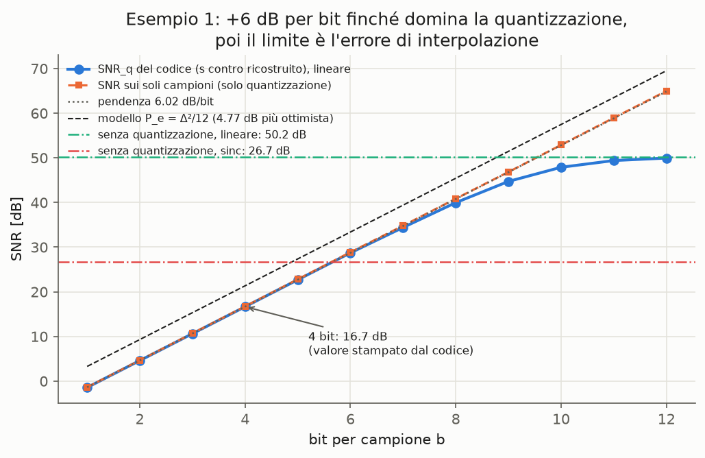
Replica. Blu: SNR stampato dal codice; arancio: SNR dei soli campioni; nero tratteggiato: modello \Delta^2/12 (parallelo, +4.77 dB); linee orizzontali: i tetti senza quantizzazione (50.2 dB triangolo, 26.7 dB sinc).
Spiegazioni e dimostrazioni passo-passo
Apri una voce per leggere la spiegazione in parole semplici e le dimostrazioni svolte riga per riga (🧩 = passaggio ricostruito da me).
Lab 0 — Simulare il "tempo continuo" e calcolare lo spettro
⚠️ Non materia d'esame: serve a capire cosa fa lo script AD_conversion.m prima di campionare. Fonte: laboratorio conversione ad.
Il problema
Un computer non può memorizzare un segnale a tempo continuo: conosce solo numeri, uno dopo l'altro. Per "vedere" il campionamento bisogna quindi fingere di avere un segnale continuo. Il trucco dello script: usare una griglia di tempi molto più fitta di quella di campionamento. Rispetto al campionamento vero (T_s \approx 0.5 s) la griglia con passo 6 ms si comporta come il continuo.
Cosa fa il codice · AD_conversion.m righe 5–13
accuracy = 1e4; % numero di punti della griglia
t_i = -30; t_f = 30; % asse dei tempi: da -30 s a 30 s
D = t_f - t_i; % 60 s
dt = D/accuracy; % passo della griglia
t = t_i:dt:t_f-dt; % 10^4 istanti
Regola d'oro del codice: ogni istante "speciale" (inizio del segnale, spigoli, periodo di campionamento) viene arrotondato a un multiplo di dt con round(x/dt)*dt. Serve perché nel vettore esistono solo i tempi della griglia: un istante che non sta sulla griglia non si può né leggere né scrivere.
🧩 Conseguenza: il trapezio parte a -1.998 s invece che a -2 s (perché -2/0.006 = -333.3 \to -333), e più avanti T_s diventa 0.498 s invece di 0.5 s (lab campionamento). Sono spostamenti di pochi ms, invisibili nei grafici ma presenti nei numeri.
Esempio 1: il trapezio (righe 21–35)
Il segnale vale 0 fino a -2, sale linearmente fino a 1 in t = -1, resta a 1 fino a t = 1, scende a 0 in t = 2. Il codice lo costruisce concatenando pezzi: zeri, rampa t + 2, uni, rampa -t + 2, zeri. W = 1 è la banda "dichiarata" in Hz.
Esempio 2: tre sinusoidi (righe 44–48)
Frequenze 4 Hz, 1.33 Hz, 0.4 Hz; W = 4 Hz, la più alta. Qui la banda è davvero limitata. Cosa succede campionandolo: lab campionamento.
Lo spettro (righe 79–85)
S_dft = fftshift(fft(s)); % DFT, con la frequenza zero al centro
S = dt*S_dft; % scala: approssima l'integrale di Fourier
f = linspace(-0.5,0.5,N)/dt; % asse delle frequenze in Hz
Cosa succede davvero
Perché dt*fft è la trasformata di Fourier
🧩 Derivazione mia
- Il fattore e^{-j2\pi ft_i} nasce perché la griglia parte da -30 e non da 0: cambia la fase, non il modulo. Lo script disegna
abs(S), quindi non si vede. fftshiftsposta le frequenze negative a sinistra, così l'asse va da -\frac{1}{2dt} a +\frac{1}{2dt}.
Numeri:
- banda visibile \pm\frac{1}{2dt} = \pm 83.3 Hz: sono gli estremi dell'asse di Figure_1.png;
- risoluzione in frequenza \frac{1}{N\,dt} = \frac{1}{60} Hz, cioè l'inverso della durata della finestra.
🧩 Dettaglio:
linspace(-0.5,0.5,N)/dtmette N punti con passo \frac{1}{(N-1)dt} invece di \frac{1}{N\,dt}. L'errore è di una parte su 10^4: invisibile.
Lo spettro esatto del trapezio · Figure_1.png
🧩 Derivazione mia: serve a controllare che la FFT dia il risultato giusto.
Il trapezio è la convoluzione di due rettangoli: s(t) = \Pi(t/3) \ast \Pi(t).
- Un rettangolo largo 3 e uno largo 1 danno un risultato largo 3 + 1 = 4 (da -2 a 2): è la regola "le durate si sommano", la stessa di lab interpolazione.
- Il risultato sale linearmente mentre i due si sovrappongono sempre di più, per un tratto lungo 1.
- Resta costante e pari a 1 (sovrapposizione piena: larghezza 1 × altezza 1) per 3 - 1 = 2 s.
In frequenza la convoluzione diventa un prodotto, con \mathcal{F}[\Pi(t/T)] = T\,\text{sinc}(fT) (modulazione digitale):
- S(0) = 3 = area del trapezio, \frac{(4 + 2)}{2}\cdot 1 = 3 ✓, ed è il picco a 3 di Figure_1.png;
- la FFT dà 2.986: la differenza viene dal trapezio "arrotondato" alla griglia.
Energia:
W = 1 è una "banda" ragionevole, anche se il segnale non è a banda limitata.
🧩 Grafico mio (replica Python dello script).
- A sinistra: zoom sullo spigolo in t = -1. Il "segnale continuo" è una fila di punti distanti 6 ms.
- Al centro: |dt\cdot\text{FFT}(s)| (blu) sovrapposto alla trasformata esatta 3|\text{sinc}(3f)\,\text{sinc}(f)| (arancio tratteggiato): coincidono.
- A destra: lo stesso spettro in dB. I lobi scendono ma non arrivano mai a zero: un segnale limitato nel tempo non è limitato in banda (aliasing).
Figura del laboratorio, esempio 1. In alto il trapezio su [-3, 3] s. Al centro lo spettro su tutto l'asse \pm 83 Hz: tutto concentrato attorno a 0, picco 3. In basso i campioni su tutta la finestra [-30, 30] s: 121 aste, quasi tutte nulle, con i valori 0.5 e 1 attorno all'origine.
Dubbi chiariti
- "Ma il segnale è continuo o no?" No: è un vettore di 10^4 numeri. Si comporta come continuo perché dt = 6 ms è 83 volte più piccolo di T_s. Tra un campione e l'altro ci sono 82 punti "continui" che il campionamento butterà via.
- "Perché la finestra è così lunga (60 s) se il trapezio dura 4 s?" Per avere molta risoluzione in frequenza (1/60 Hz) e spazio per le code della sinc (lab interpolazione). Ha però un effetto collaterale sull'SNR: lab snr.
DFT come campionamento della DTFT
Negli appunti sparsi del quaderno «Lezioni» sono confrontate due trasformate di una sequenza x(m):
Se x(m)\neq0 solo per m=0,1,\dots,N-1, la prima somma ha gli stessi termini della seconda, e le due coincidono per \nu=k/N: la DFT è il campionamento della trasformata di Fourier a tempo discreto sulla griglia \nu_k=k/N. (Negli appunti c'è anche la formula con gli indici scambiati, X_m=\sum_{k=0}^{N-1}x_ke^{-j2\pi km/N}.)
L'ultima riga degli appunti, «per effetto di elaborazione la componente continua viene spezzata e spostata», è segnata come da capire.
🧩 Spiegazione mia. La DTFT è periodica in \nu con periodo 1, quindi il campione k con k>N/2 è anche il campione alla frequenza negativa \nu=k/N-1. La
fftrestituisce gli indici 0,\dots,N-1: la frequenza zero (la componente continua) sta all'indice 0 e le frequenze negative stanno in fondo al vettore. Uno spettro concentrato attorno a 0, come quello del trapezio, appare perciò spezzato tra l'inizio e la fine dell'asse.fftshiftscambia le due metà del vettore e sposta la frequenza zero al centro: è la rigaS_dft = fftshift(fft(s))dello script, ed è per questo che l'asse va da -\frac{1}{2dt} a +\frac{1}{2dt}.
Collegamento alla teoria
- La domanda (teorema del campionamento), cioè come scegliere f_c per un dato segnale, parte proprio dallo spettro: qui lo si calcola per poter scegliere f_s = 2W.
- Nelle slide la frequenza di campionamento si chiama f_c e il periodo T_c; nel codice
fseTs.
Lab 1 — Campionamento
⚠️ Non materia d'esame: serve a vedere il teorema del campionamento all'opera. Fonte: laboratorio conversione ad. Prima leggere lab setup e spettro.
Cosa fa il codice · AD_conversion.m righe 87–101
fs = 2*W; % frequenza di Nyquist
Ts = 1/fs;
Ts = round(Ts/dt)*dt; % Ts deve stare sulla griglia
f_samp = 1/Ts; % fs vera, dopo l'arrotondamento
high = (abs((t/Ts)-round(t/Ts))<eps); % true dove t è multiplo di Ts
s_samp = s.*high; % azzera tutto il resto
is = find(high); % indici dei campioni
stem(t(is),s_samp(is));
Passo per passo:
- Scelta di f_s. Si prende il minimo del teorema, f_s = 2W.
- Arrotondamento. T_s viene arrotondato a un multiplo di dt, altrimenti gli istanti nT_s non esisterebbero nel vettore t (lab setup e spettro).
- Ricerca degli istanti.
highè un vettore di 0 e 1: vale 1 dove t/T_s è un intero, a meno dieps= 10^{-8} per gli errori di arrotondamento dei numeri in virgola mobile. - Campionamento.
s.*highmoltiplica punto per punto: lascia s negli istanti nT_s e mette 0 ovunque altrove. Il vettore ha ancora 10^4 punti, ma solo 121 possono essere diversi da zero.
Cosa succede davvero
Il vettore s_samp è x_\delta(t)
Nelle slide il campionamento ideale è x_\delta(t) = \sum_n x_a(nT_c)\,\delta(t - nT_c) (teorema del campionamento): un treno di impulsi pesati dai campioni, nullo tra un impulso e l'altro. s_samp è la sua versione simulata:
- è nullo tra un campione e l'altro;
- negli istanti nT_s vale il campione.
🧩 Differenza (mia): la \delta ha area 1, mentre nel vettore un punto isolato vale s(nT_s) ma "occupa" solo dt. Il codice non corregge questa scala, e non serve: nell'interpolazione il filtro h ha picco 1, quindi la convoluzione restituisce direttamente \sum_n s(nT_s)\,h(t - nT_s) (lab interpolazione).
I numeri dell'esempio 1
🧩 Derivazione mia
Nella finestra [-30, 30) cadono i campioni n = -60, \dots, 60: 121 campioni. Sono diversi da zero solo i 9 tra -1.992 e 1.992 s:
| nT_s [s] | \pm 1.992 | \pm 1.494 | \pm 0.996, \pm 0.498, 0 |
|---|---|---|---|
| s(nT_s) | 0.008 | 0.506 | 1 |
I due campioni da 0.008 sono appena dentro il trapezio: -1.992 + 2 = 0.008.
Cosa succede allo spettro
Campionare nel tempo replica lo spettro ogni f_s:
🧩 Grafico mio (replica dello script).
- In alto: il trapezio (grigio) e i campioni
s_samp(aste blu) ogni T_s = 0.498 s. - In basso: il modulo della trasformata dei campioni, moltiplicata per T_s (blu), e le singole repliche S(f), S(f \mp f_s) (tratteggiate). La trasformata dei campioni è la somma delle repliche. Nella fascia azzurra |f| < f_s/2 = 1.004 Hz la replica centrale è quasi pulita: le code delle vicine valgono pochi centesimi.
🧩 Il commento della riga 88 dice che con W = 1 «è come se avessimo applicato un filtro anti-aliasing». Va letto così: nessun filtro viene applicato, ma il segnale ha già quasi tutta l'energia sotto 1 Hz. Il risultato somiglia a quello che darebbe un filtro antialiasing. L'aliasing c'è, ma è trascurabile.
Esempio 2: quando l'arrotondamento rompe il teorema
🧩 Esperimento mio con la replica dello script,
flag = 2(nessuna figura del laboratorio per questo caso).
- La componente a 4 Hz supera f_{samp}/2 = 3.968 Hz e si ripiega in f_{samp} - 4 = 3.937 Hz, come nell'esempio da 1.5 kHz di aliasing.
- L'originale (4 Hz) e il suo alias (3.937 Hz) differiscono di 0.063 Hz: la fase dell'uno scorre lentamente rispetto a quella dell'altro. In certi tratti la ricostruzione segue il segnale, in altri è sfasata di mezzo periodo. L'errore ha un andamento periodico di circa 1/0.063 \approx 16 s: minimi attorno a t \approx -12,\ 4,\ 20 s nella simulazione.
- SNR della ricostruzione con la sinc: 2 dB. Con f_s = 16.7 Hz, cioè il doppio, sale a 37.5 dB.
🧩 Grafico mio. In alto l'esempio 2 con i parametri del codice (f_s = 7.94 Hz): i campioni (arancio) sono giusti, ma la curva ricostruita (blu) non è il segnale (grigio), perché i campioni sono compatibili anche con un'altra sinusoide più lenta. In basso con f_s = 16.67 Hz: la ricostruzione coincide.
🧩 Anche senza arrotondamento, f_s = 2W esatto è il caso limite (b): le repliche si toccano in f_s/2. Una sinusoide proprio a f_s/2 viene campionata sempre nella stessa fase, a meno del segno, e la sua ampiezza non si ricostruisce. Esempio: \sin(2\pi\,4\,nT_s + \frac{\pi}{5}) con T_s = 1/8 vale (-1)^n\sin\frac{\pi}{5}, quindi l'ampiezza apparente è 5\sin 36° = 2.94 invece di 5. Per questo in pratica si sovracampiona (teorema del campionamento).
Dubbi chiariti
- "Perché T_s = 0.498 e non 0.5?" Perché nel vettore esistono solo multipli di dt = 6 ms, e 0.5 non lo è (0.5/0.006 = 83.3).
- "Il segnale campionato è ancora un vettore di 10^4 punti?" Sì. È il modo di simulare x_\delta(t) restando sulla griglia "continua": serve per poterlo convolvere con il filtro di ricostruzione, che vive sulla stessa griglia.
- "Perché f_s = 2W non basta?" Nell'esempio 1 perché il segnale non è a banda limitata (aliasing piccolo). Nell'esempio 2 perché l'arrotondamento porta f_s sotto 2W (aliasing grosso). E comunque 2W esatto è il caso limite.
Collegamento alla teoria
teorema del campionamento (campionamento ideale e repliche), aliasing (ripiegamento, filtro antialiasing).
Lab 2 — Interpolazione: convoluzione, durata e taglio
⚠️ Non materia d'esame: serve a vedere l'interpolazione all'opera e a capire due cose che nel codice sembrano misteriose: perché il ricostruito è più lungo del segnale e perché va tagliato. Fonte: laboratorio conversione ad. Prima leggere lab campionamento.
Cosa fa il codice · AD_conversion.m righe 103–131
C = 2; % 1 rettangolo, 2 triangolo, 3 sinc
switch C
case 1 % rect((t-Ts/2)/Ts): th = 0:dt:Ts; h = ones(...)
case 2 % lambda(t/Ts): th = -Ts:dt:Ts; h = 1-abs(th/Ts);
case 3 % sinc(t/Ts): th = -25*Ts:dt:25*Ts; h = sinc(th/Ts);
end
L = length(h);
s_r = conv(s_samp,h); % convoluzione
s_r_trunc = s_r(floor((L-1)/2)+1 : floor((L-1)/2)+N); % taglio
% il segnale risultante da una convoluzione ha una durata pari alla somma
% della durata dei segnali convoluti
- Il filtro h è definito sulla stessa griglia dt del segnale, sul suo asse dei tempi
th. convcalcola la convoluzione dei due vettori.- Il risultato viene tagliato a N punti, con il commento sulla durata.
- In fondo allo script (righe 199–202) viene costruito l'asse dei tempi dell'uscita completa:
t_conv_start = t(1) + th(1);
t_conv = t_conv_start + (0:(length(s_r)-1)) * dt;
Cosa succede davvero
1. La convoluzione è la formula di interpolazione
Nelle slide la ricostruzione è x_r(t) = \sum_n x(n)\,h_r(t - nT_c) (interpolazione): ogni campione "accende" una copia del filtro centrata sul suo istante e pesata dal suo valore, e le copie si sommano.
🧩 Perché
convfa proprio questo (derivazione mia):
Poiché h vale 1 al centro, la copia del campione n passa esattamente per il valore s(nT_s).
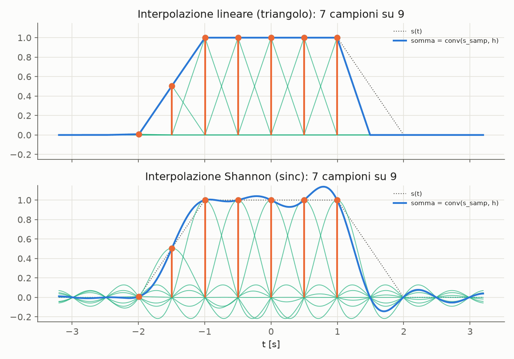
🧩 Animazione mia (replica dello script, esempio 1). Si aggiungono i 9 campioni non nulli uno alla volta. Ogni campione (asta arancio) accende una copia di h (verde); la curva blu è la somma delle copie accese finora, cioè il risultato di conv.
- In alto, triangoli: la somma diventa la spezzata che unisce i campioni.
- In basso, sinc: le copie oscillano e si compensano a vicenda; la somma è morbida.
2. Perché il risultato dura di più: le durate si sommano
Il commento del codice (riga 129) è una proprietà generale della convoluzione.
🧩 Derivazione mia. Se x è diverso da zero solo in [a_1, b_1] e h solo in [a_2, b_2]:
Intuizione: mentre h "scorre" su x, l'uscita comincia appena i due si toccano (il bordo sinistro di uno sul bordo destro dell'altro) e finisce quando si lasciano. Per vettori è lo stesso: N e L punti danno N + L - 1 punti.
Numeri dell'esempio 1 (N = 10^4, T_s = 83\,dt):
| Filtro | th |
L | Uscita di conv |
Asse dell'uscita |
|---|---|---|---|---|
| triangolo (C = 2) | [-T_s, T_s] | 2\cdot 83 + 1 = 167 | 10^4 + 166 = 10166 punti | [-30.498,\ 30.492] s |
| sinc, 25 lobi (C = 3) | [-25T_s, 25T_s] | 2\cdot 25\cdot 83 + 1 = 4151 | 14150 punti | [-42.45,\ 42.44] s |
| rettangolo (C = 1) | [0, T_s] | 84 | 10083 punti | [-30,\ 30.492] s |
L'asse dell'uscita è quello costruito alle righe 199–202: parte da t(1) + th(1) e avanza di dt. Per la sinc: -30 + (-12.45) = -42.45 s.
🧩 Anche nel segnale "vero" si vede la somma delle durate. I campioni non nulli vanno da -1.992 a 1.992 s e il triangolo dura 2T_s \approx 1 s. Il ricostruito lineare è quindi diverso da zero da -1.992 - 0.498 a 1.992 + 0.498, cioè su circa [-2.49, 2.49] s. Lì i due campioni da 0.008 danno code alte 0.008, invisibili.
3. Perché si taglia, e perché proprio lì
Per due motivi:
- Confrontare. Per disegnare s_r sullo stesso asse di s e soprattutto per calcolare l'errore
s - sq_r_trunc(lab snr) i due vettori devono avere la stessa lunghezza e gli stessi istanti, punto per punto. - Le parti in più sono "code". I punti che escono dalla finestra [-30, 30) sono le code dei filtri centrati sui campioni vicini ai bordi. Non corrispondono a nessun istante in cui conosciamo s(t).
Dove tagliare lo dice l'asse del punto 2.
🧩 Derivazione mia. Il punto k dell'uscita (indice Matlab da 1) sta all'istante
Voglio il punto che cade in t(1), l'inizio dell'asse di s:
s_r(floor((L-1)/2)+1 : floor((L-1)/2)+N). Si butta metà dell'eccesso a sinistra e metà a destra, cioè \frac{L-1}{2} punti per lato: 83 per il triangolo (T_s), 2075 per la sinc (12.45 s).
Cosa succede se si taglia male. Prendendo semplicemente i primi N punti, ogni valore viene disegnato -th(1) secondi prima di dove dovrebbe stare: il ricostruito appare ritardato, di T_s = 0.498 s con il triangolo e di 12.45 s con la sinc.
🧩 Grafico mio (esempio 1, sinc con 25 lobi).
- In alto: gli ingressi di
conv. I campioni stanno su un asse di 10^4 punti, [-30, 30) s (barra azzurra); il filtro sinc su 4151 punti, [-12.45, 12.45] s. - Al centro: l'uscita completa, 14150 punti da -42.45 a 42.44 s. Le fasce rosse sono i pezzi che il codice taglia.
- In basso: con il taglio del codice (blu) il ricostruito si sovrappone al trapezio; con il taglio sbagliato, i primi N punti (rosso tratteggiato), è spostato di 12.45 s.
4. I tre filtri a confronto
🧩 Grafico mio, esempio 1 senza quantizzazione; SNR calcolato come in lab snr.
- Rettangolo (C = 1), SNR 15.8 dB: gradini, con picchi verticali (spiegati sotto). In verde tratteggiato lo ZOH corretto e causale, SNR 12.2 dB.
- Triangolo (C = 2), SNR 50.2 dB: la spezzata coincide con il trapezio.
- Sinc (C = 3), SNR 26.7 dB: curva morbida con piccole oscillazioni, massimo 1.029 in t = -0.82 s.
Perché il triangolo vince qui. Il trapezio è esso stesso una spezzata, e i suoi spigoli (\pm 1, \pm 2) cadono quasi esattamente su campioni (\pm 0.996, \pm 1.992). La FOH, che unisce i campioni con segmenti, lo ricostruisce quasi alla perfezione: errore massimo 0.008. È una coincidenza favorevole di questo segnale, non una regola.
Perché la sinc oscilla. La serie di Shannon ricostruisce l'unico segnale a banda limitata |f| < f_s/2 che passa per i campioni. Il trapezio non è a banda limitata: i suoi spigoli richiedono frequenze alte, che la sinc non può produrre. Ottiene quindi una versione "smussata" con piccole oscillazioni, a cui si aggiungono il poco aliasing (lab campionamento) e il troncamento a 25 lobi. Nell'esempio 2, che è a banda limitata, la sinc è la scelta giusta (lab campionamento).
Il rettangolo del codice (C = 1) ha due particolarità (🧩 osservazioni mie, dalla replica):
th = 0:dt:Tscontiene sia 0 sia T_s: 84 punti per un intervallo lungo T_s = 83 passi. Due rettangoli adiacenti hanno quindi un punto in comune, che viene sommato due volte. Da qui i picchi a 2 (dove due campioni valgono 1) e a 1.5 (dove valgono 1 e 0.5). Conth = 0:dt:Ts-dtspariscono.- Il filtro è causale:
thparte da 0, non da -T_s/2. Il taglio "da (L-1)/2" pensato per i filtri simmetrici lo anticipa di 41\,dt = 0.246 \approx T_s/2. I gradini risultano centrati sui campioni, cioè un'interpolazione "al campione più vicino", non causale. Lo ZOH vero delle slide tiene invece il campione dopo l'istante di campionamento: è la curva verde, più in ritardo e con SNR più basso (12.2 dB).
5. Quanto deve essere largo il filtro
📄 Larghezze delle slide: ZOH h_r(t) = \Pi\big(\frac{t - T_c/2}{T_c}\big), un rettangolo largo T_c; FOH h_r(t) = \Lambda(t/T_c), un triangolo con base da -T_c a T_c, cioè larga 2T_c. Nel codice:
th = 0:dt:Tseth = -Ts:dt:Ts(AD_conversion.m, righe 111 e 115). 🧩 Il perché di quelle larghezze è una spiegazione mia.
Risposta breve:
- rettangolo largo T_s, un periodo di campionamento;
- triangolo con base 2T_s, da -T_s a +T_s, cioè alto 1 al centro e nullo sui campioni vicini.
Le larghezze non sono arbitrarie: sono le uniche per cui valgono due condizioni che ogni interpolatore di questo tipo deve rispettare.
Condizione 1: passare per i campioni. Nell'istante mT_s il ricostruito deve valere esattamente x(mT_s). Dalla serie
- Il triangolo con base 2T_s ci riesce: arriva a zero proprio in \pm T_s, sui campioni vicini.
- Con base 3T_s in \pm T_s vale ancora 1/3: ogni campione "sporca" i vicini, e il ricostruito non passa più per i campioni.
- La sinc \text{sinc}(t/T_s) soddisfa la stessa condizione con i suoi zeri in kT_s.
Condizione 2: niente buchi e niente sovrapposizioni. Se il segnale è costante, per esempio tutti i campioni valgono 1, il ricostruito deve valere 1 ovunque, anche tra un campione e l'altro. Con tutti i campioni pari a 1 la serie diventa \sum_n h(t - nT_s), quindi deve essere
- rettangolo: copie larghe T_s messe ogni T_s si toccano senza sovrapporsi. Più strette lasciano buchi (somma 0), più larghe si sovrappongono (somma 2);
- triangolo: in ogni punto tra nT_s e (n+1)T_s ci sono esattamente due triangoli accesi. Uno scende come 1 - \tau/T_s, l'altro sale come \tau/T_s, con \tau = t - nT_s, e i due pesi sommano sempre a 1. Il ricostruito è quindi la media pesata dei due campioni vicini: il segmento che li unisce.
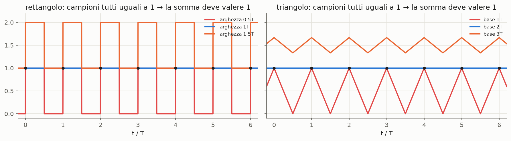
🧩 Grafico mio: la condizione 2 vista direttamente. Tutti i campioni valgono 1 (punti neri) e si disegna \sum_n h(t - nT).
- Rettangolo: largo T dà 1 ovunque (blu); largo T/2 alterna 1 e 0, perché ci sono buchi; largo 1.5T alterna 2 e 1, perché le copie si sovrappongono.
- Triangolo: base 2T dà 1 ovunque; base T scende a 0 a metà tra i campioni; base 3T oscilla tra 1.33 e 1.67 e non vale 1 nemmeno sui campioni.
🧩 Grafico mio: lo stesso segnale lento (tratteggiato) campionato ogni T (punti arancio) e ricostruito con sei larghezze. In verde le copie di h (una per campione, scalata dal suo valore), in blu o rosso la loro somma.
- In alto, rettangolo:
- largo T/2: ogni campione è tenuto solo per mezzo periodo, poi il segnale crolla a 0 (buchi);
- largo T: la classica scala dello ZOH, ogni valore tenuto fino al campione successivo;
- largo 1.5T: nella seconda metà di ogni periodo due rettangoli si sommano. Per t tra 2T e 2.5T il ricostruito vale x(T) + x(2T) = 0.89 + 0.84 = 1.73, quasi il doppio del segnale.
- In basso, triangolo:
- base T: passa per i campioni ma tra l'uno e l'altro ricade a 0 (denti di sega);
- base 2T: la spezzata che unisce i campioni (FOH);
- base 3T: anche nei campioni si somma un terzo dei vicini. In t = T il ricostruito vale x(T) + \frac{x(0) + x(2T)}{3} = 1.39 invece di 0.89.
Collegamento con il codice. Il triangolo del laboratorio è quello giusto: th = -Ts:dt:Ts, base 2T_s, e il ricostruito lineare coincide con il trapezio. Il rettangolo del codice, th = 0:dt:Ts, è largo T_s ma più un punto. È l'equivalente discreto del caso "troppo largo": nel punto in comune due copie si sommano, e da lì vengono i picchi a 2 descritti al punto 4.
💡 Connessione: le due condizioni si leggono anche in frequenza. La condizione 2, \sum_n h(t - nT_s) = 1, equivale a chiedere che H_r(f) abbia area H_r(0) = T_s e si annulli in \pm f_s, \pm 2f_s, \dots, cioè al centro delle repliche. È quello che fanno T_c\,\text{sinc}(fT_c) e T_c\,\text{sinc}^2(fT_c) nel grafico delle H_r(f) di interpolazione. Un rettangolo largo 1.5T ha invece i suoi zeri ogni \frac{1}{1.5T}, non ogni f_s.
Le figure del laboratorio · Figure_2_interpolazione_lineaare.png, Figure_2_interpolazione_shannon.png
Figura del laboratorio, C = 2. In alto il ricostruito s_r(t): il trapezio ritorna identico. Al centro e in basso la parte quantizzata (lab quantizzazione).
Figura del laboratorio, C = 3. In alto il ricostruito con la sinc: fianchi arrotondati, due gobbe sopra 1 attorno a \pm 0.8 s e piccole oscillazioni fuori da [-2, 2].
Dubbi chiariti
- "Perché il ricostruito dura più dei due segnali presi singolarmente?" Perché la convoluzione fa scorrere un segnale sull'altro: l'uscita esiste da quando si toccano a quando si lasciano, cioè per la somma delle durate (derivazione al punto 2).
- "Perché tagliarlo?" Per riportarlo sull'asse di s(t) e confrontarlo punto per punto. I pezzi tolti sono code fuori dalla finestra in cui conosciamo il segnale.
- "Quanto deve essere largo il rettangolo, o il triangolo?" Rettangolo largo T_s, triangolo con base 2T_s. Sono le uniche larghezze per cui il ricostruito passa per i campioni e le copie di h non lasciano buchi né si sovrappongono (punto 5).
- "Perché da (L-1)/2?" Perché è il ritardo introdotto da un filtro centrato in 0 ma memorizzato a partire da th(1) = -\frac{L-1}{2}dt: lo si compensa scartando quei punti.
Collegamento alla teoria
interpolazione: serie di Shannon, ZOH, FOH. Il confronto tra i tre SNR corrisponde a quello tra le loro H_r(f) nel grafico di quella pagina.
Lab 3 — Quantizzazione
⚠️ Non materia d'esame: serve a vedere la quantizzazione uniforme su numeri veri. Fonte: laboratorio conversione ad. Prima leggere lab campionamento e lab interpolazione.
Cosa fa il codice · AD_conversion.m righe 146–175
bits = 4;
s_min = min(s_samp); s_max = max(s_samp);
range = s_max - s_min; % dinamica dei campioni
Nq = pow2(bits); % 2^4 = 16 livelli
Delta = range/Nq; % larghezza di una cella
cbook = s_min+Delta/2:Delta:s_max; % livelli al centro delle celle
for k=1:length(is) % per ogni campione:
[~,index(k)] = min(abs(cbook-s_samp(is(k)))); % livello più vicino
end
s_q(is) = cbook(index); % campioni quantizzati
sq_r_trunc = ...conv(s_q,h)... % stessa interpolazione di prima
- Dinamica. Si prende l'intervallo [s_{min}, s_{max}] dei valori campionati.
- Celle. Lo si divide in N_q = 2^{b} celle uguali di larghezza \Delta.
- Codebook. I livelli (parole codice) sono i centri delle celle.
- Quantizzazione. Ogni campione va nel livello più vicino.
- Ricostruzione. I campioni quantizzati passano nello stesso interpolatore di lab interpolazione, con lo stesso taglio.
Cosa succede davvero
I numeri dell'esempio 1
🧩 Derivazione mia
Cosa succede ai campioni:
| Campione | Livello più vicino | Errore e = s_q - s |
|---|---|---|
| 0 (i 112 campioni fuori dal trapezio) | 0.03125 | +0.03125 = +\Delta/2 |
| 0.008 (in \pm 1.992) | 0.03125 | +0.023 |
| 0.506 (in \pm 1.494) | 0.53125 (distanza 0.025, contro 0.038 da 0.46875) | +0.025 |
| 1 (5 campioni) | 0.96875 | -0.03125 = -\Delta/2 |
È il quantizzatore uniforme delle slide: celle larghe \Delta, livello nel punto medio, |e| \le \Delta/2 nella regione granulare. Qui la dinamica non è simmetrica ([0, 1] invece di [-X_{max}, X_{max}]), ma la relazione è la stessa: M\Delta = ampiezza della dinamica, con M = N_q (quantizzazione uniforme).
Lo zero non esiste
Con i livelli al centro delle celle e l'estremo della dinamica in 0, nessun livello vale 0: il più basso è \Delta/2. Tutti i campioni nulli, cioè 112 su 121, diventano 0.03125. Dopo l'interpolazione il segnale ricostruito ha un "pavimento" a 0.031 su tutta la finestra fuori dal trapezio: è la riga sollevata che si vede in basso nelle due figure del laboratorio.
Allo stesso modo il massimo 1 diventa 0.96875: il plateau ricostruito si abbassa di \Delta/2.
🧩 Perché conta: l'errore di questi campioni non è "casuale tra -\Delta/2 e \Delta/2" come nel modello delle slide, ma vale sempre esattamente +\Delta/2. Il modello \Delta^2/12 sottostima quindi il rumore: le conseguenze sull'SNR sono in lab snr.
🧩 Grafico mio (replica dello script, 4 bit).
- A sinistra: la caratteristica a gradini Q(x) con i 16 livelli. I pallini arancio sono i valori dei campioni del trapezio (0, 0.008, 0.506, 1): lo 0 finisce su \Delta/2.
- Al centro: l'errore sui 121 campioni. Quasi tutti valgono +\Delta/2 (i campioni nulli); i 5 campioni a 1 valgono -\Delta/2; i quattro sui fianchi stanno in mezzo. Tutti restano dentro \pm\Delta/2 (linee rosse).
- A destra: il ricostruito dopo la quantizzazione (interpolazione lineare), con il pavimento a 0.031 e il plateau a 0.969.
Le figure del laboratorio
Nelle figure Figure_2_interpolazione_lineaare.png e Figure_2_interpolazione_shannon.png (embed in lab interpolazione):
- pannello centrale: i campioni quantizzati s_q(n). Le aste nulle ora partono da 0.03, quelle a 1 arrivano a 0.97, quelle a 0.5 a 0.53;
- pannello in basso: il ricostruito \hat s_q(t). Con il triangolo si vede il pavimento a 0.03 e un piccolo gomito in t = \pm 1.5 s, dove il campione 0.506 è diventato 0.531. Con la sinc la curva è morbida e ha anche le oscillazioni fuori dal trapezio.
Dubbi chiariti
- "Perché il segnale ricostruito non torna a zero?" Perché con i livelli al centro delle celle lo zero non è rappresentabile: il livello più basso è \Delta/2. Un quantizzatore con un livello in 0 (celle centrate sullo zero) non avrebbe questo difetto.
- "Quantizzare cambia la durata o l'allineamento?" No:
s_qè nullo negli stessi punti dis_samp(solo i campioni vengono modificati), e si usano lo stesso h e lo stesso taglio.
🧩 Dettaglio del codice:
s_mines_maxsono calcolati su tuttos_samp, compresi gli zeri messi tra un campione e l'altro. Per il trapezio non cambia nulla, perché il minimo dei campioni è già 0. Con campioni tutti positivi, però, il minimo diventerebbe 0 anche se nessun campione vale 0, e la dinamica risulterebbe più larga del necessario. Andrebbe usatos_samp(is).
Collegamento alla teoria
quantizzazione uniforme (celle, livelli al centro, errore |e| \le \Delta/2: –); il codice binario dei livelli, 4 bit per 16 livelli, qui non viene scritto: lo script conserva direttamente i valori dei livelli.
Lab 4 — SNR: cosa misura il numero stampato
⚠️ Non materia d'esame: serve a capire la legge dei 6 dB/bit di snr di quantizzazione e i suoi limiti. Fonte: laboratorio conversione ad. Prima leggere lab quantizzazione.
Cosa fa il codice
P_s = mean(s.^2); % potenza del segnale originale
E_q = mean((s-sq_r_trunc).^2); % potenza dell'errore
SNR_q = 10*log10(P_s/E_q) % in dB (senza ';': viene stampato)
È la definizione delle slide, \text{SNR} = \langle x^2\rangle / \langle e^2\rangle, con le medie temporali calcolate sulla griglia. C'è però una differenza importante: l'errore è s - sq_r_trunc, cioè segnale originale meno segnale ricostruito dopo quantizzazione e interpolazione. Non è l'errore di quantizzazione e(n) = x_q(n) - x(n) sui soli campioni.
Cosa succede davvero
Il valore stampato: 16.7 dB (esempio 1, triangolo, 4 bit)
🧩 Derivazione mia, con i numeri della replica Python
Nella simulazione il 95% dell'errore viene dai 56 s in cui il segnale è nullo e il ricostruito vale 0.031 (lab quantizzazione).
Tre cose che il numero mescola
- La quantizzazione, che è quello che si vorrebbe misurare.
- L'interpolazione. Anche senza quantizzare, il ricostruito non è identico all'originale. Senza quantizzazione l'SNR vale 50.2 dB con il triangolo, 26.7 dB con la sinc e 15.8 dB con il rettangolo del codice (lab interpolazione). Con la sinc, quindi, l'SNR non può superare circa 27 dB, qualunque sia il numero di bit.
- La finestra di osservazione. P_s e E_q sono medie su 60 s, di cui 56 di "silenzio". Calcolando lo stesso SNR solo su |t| < 2.5 s si ottengono 28.4 dB invece di 16.7: la potenza del segnale sale di 12 volte, quella dell'errore molto meno.
Confronto con la legge dei 6 dB/bit
🧩 Derivazione mia
Il modello delle slide suppone l'errore uniforme in (-\Delta/2, \Delta/2), quindi con potenza \Delta^2/12 (snr di quantizzazione). Qui invece quasi tutti gli errori valgono esattamente \Delta/2, con potenza (\Delta/2)^2 = \Delta^2/4:
- Modello: 10\log_{10}\dfrac{0.0444}{(1/16)^2/12} = 21.4 dB.
- Misurato: 16.7 dB. La differenza, 4.7 dB, è proprio il fattore 3.
La pendenza di 6 dB/bit invece resta: ogni bit in più dimezza \Delta, qualunque sia la forma dell'errore. Se l'errore è proporzionale a \Delta, la sua potenza si divide per 4, cioè 10\log_{10}4 = 6.02 dB in più di SNR.
| b [bit] | 1 | 2 | 3 | 4 | 5 | 6 | 7 | 8 | 9 | 10 |
|---|---|---|---|---|---|---|---|---|---|---|
| SNR del codice [dB] | −1.4 | 4.6 | 10.6 | 16.7 | 22.7 | 28.7 | 34.4 | 40.0 | 44.7 | 47.9 |
| SNR sui soli campioni [dB] | −1.4 | 4.7 | 10.7 | 16.7 | 22.8 | 28.9 | 34.8 | 40.9 | 46.8 | 52.9 |
🧩 Valori dalla replica Python, esempio 1 con triangolo. Fino a 7–8 bit le due righe coincidono e crescono di 6.0 dB per bit. Poi quella del codice si ferma verso il limite dell'interpolazione (50.2 dB): il rumore di quantizzazione è ormai più piccolo dell'errore di ricostruzione.
🧩 Grafico mio.
- Blu: SNR stampato dal codice al variare di b. Arancio: SNR dei soli campioni.
- Nero tratteggiato: il modello \Delta^2/12, parallelo ma 4.77 dB più in alto.
- Linee orizzontali: i limiti senza quantizzazione, 50.2 dB con il triangolo e 26.7 dB con la sinc. La curva blu non può superarli.
Dubbi chiariti
- "16.7 dB con 4 bit: la formula non dava di più?" La formula 6.02b + 4.77 - [k_c]_{dB} vale con l'errore uniforme. Qui l'errore è sistematico (\Delta/2 sugli zeri) e costa 4.77 dB. In più P_s è piccola, perché il segnale occupa 4 s su 60.
- "Allora il codice sbaglia?" No: misura l'SNR dell'intera catena A/D + D/A su quella finestra. È una misura diversa, più "da ingegnere", di quella della slide, che isola la sola quantizzazione.
- "Aumentare i bit migliora sempre?" Solo finché domina la quantizzazione. Oltre, conta l'interpolatore (e prima ancora il campionamento: vedi l'esempio 2 in lab campionamento, dove l'aliasing tiene l'SNR a 2 dB).
Collegamento alla teoria
snr di quantizzazione: definizione, modello \Delta^2/12 e legge dei 6 dB/bit. Il fattore di carico k_c di quantizzazione uniforme qui è grande, perché la potenza media è piccola rispetto alla dinamica: anche questo abbassa l'SNR.
Domande da esame
Nessuna: materiale di laboratorio. Serve per rispondere meglio alle domande su teorema del campionamento, interpolazione, quantizzazione uniforme e snr di quantizzazione.